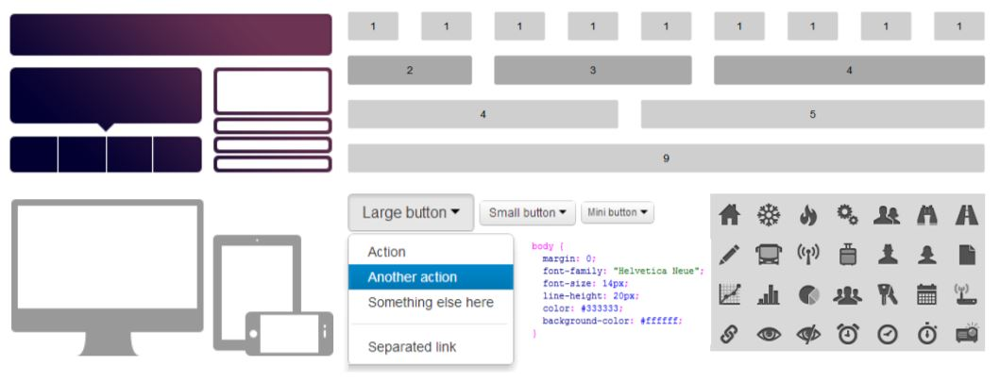
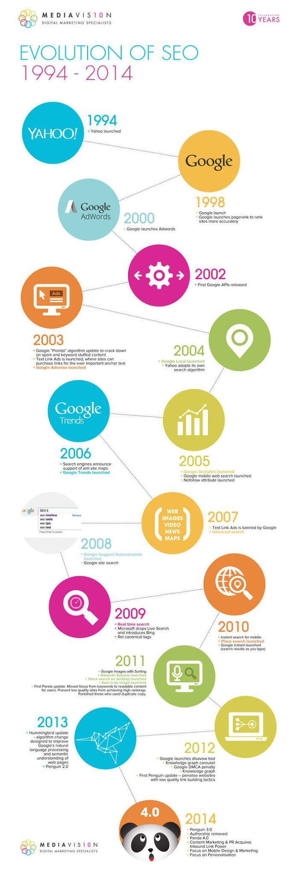

Contenidos del sitio web
FRAMEWORKS CSS

POSICIONAMIENTO WEB

A raíz de la pandemia del COVID-19 la educación virtual ha venido a suplir la necesidad de la presencialidad, siendo usado por todas las instituciones educativas, esto ha traído como resultado la necesidad de elaborar recursos educativos digitales para dinamizar las estrategias de aprendizaje. Es por eso que este sitio web se ha planteado como una de estas estrategias de aprendizaje y busca proporcionar heramientas para el aprendizaje de calidad relacionado especificamente con los Frameworks CSS y el Posicionamiento web. De ahi, que el proposito del sitio web sea capacitar a sus visitantes sobre estos dos temas tan importantes en la actualidad